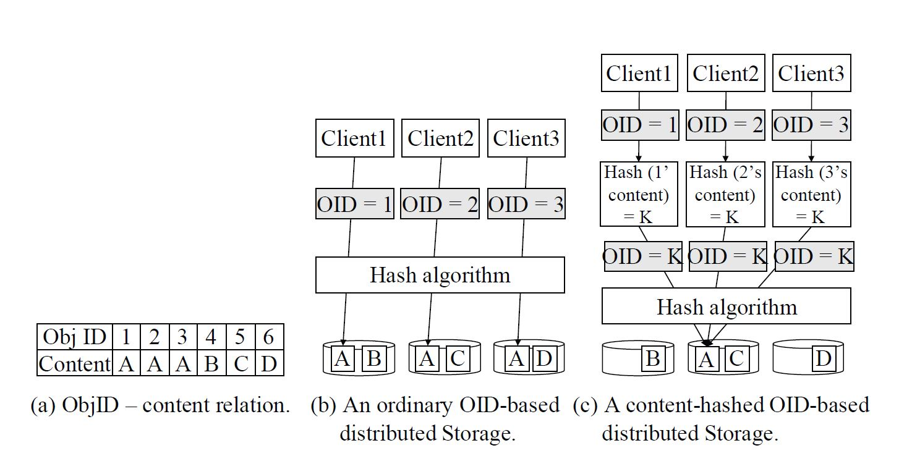
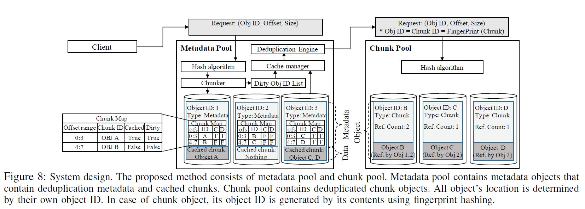
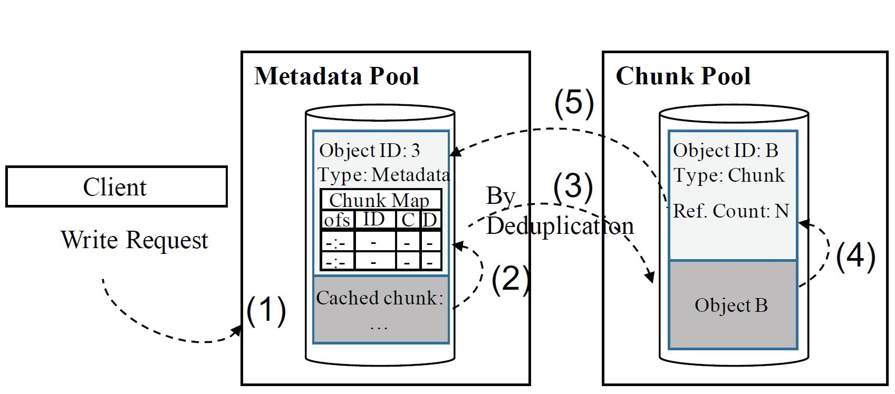

Andy Lii
June 14, 2019
Data redundancy is why Ceph can guarantee the safety of your data. The concept of dedup is to get rid of redundancy to ensure more efficient space usage though
What if something breaks when we’re deduping? Can’t guarantee that our ops finished successfully or failed without catastrophic side effects
Say each object needs 32 bytes as its fingerprint, all stashed in memory. When data exceeds several PBs we will need a huge memory to store just the fingerprints…
but dedup ratio is just meh
Now we just calculate which object lives in which PG, no need to memorize fingerprints in precious memory!

Instead of coming up with a new DS for metadata dedicated to dedup, why not just add what we need into current implementation?
Easier said then done… I’m glad the authors seem to have done it. Check xattr of each chunk
They use dedup dedicated threads to do stuff
It’s post-processing because inline dedup interferes with the io too much
Selectively dedups the not-so-hot objects. The hots ones might be modified very soon so better not dedup them
Both have their own set of metadata. We treat them like good ol’ data obj so that they benefit from Ceph’s guarantees
Stored in md pool, contains md for dedup, namely object_manifest_t, which contains chunk_map. Also could possibly store cached chunk data
chunk_map: offset range + chunk ID + cached bit + dirty bit
offset range & chunk ID: tells you this md obj is comprisd of which chunk objs
cached bit: set if chunk data is still with md obj, otherwise if chunk data has been dispatched to chunk obj
dirty bit: set if this obj needs dedup
Stored in chunk pool, contains chunk data and refcount info (pool ID, source obj ID, offset)
Chunk obj’s ID is determined by its contents
Make chunk objects reside in chunk pool, and metadata objects in metadata pool. Pools can have different replication schemes, use different erasure codes or event different crush rules
If a chunk is cached, it is stored within a metadata object. Seems like here a md obj can at most hold only 1 chunk data
User puts data into system
System splits data into chunks and hashes them. The hash value is chunk obj’s ID
System hashes chunk obj ID to find which PG the chunk obj should live in, so if two chunks have same contents, their locations are the same so naturally we can distinguish and remove dups
Post-processing, done with a background thread
Look for dirty metadata obj. Note all write reqs for a metadata obj are logged into dirty obj ID list
Find dirty chunk obj ID from dirty meta obj’s chunk_map
If this dirty chunk data does need dedup, engine checks if this chunk already has a chunk obj ID by calculating its hash value. a). If not, then engine gens a chunk obj and sends it to the chunk pool. b). If so, the engine sends a deref msg to old chunk obj and after it’s completed generates a new chunk obj with new chunk obj ID, and sends it to chunk pool.
Use CRUSH to determine where the new chunk obj should live. If CRUSH tells us the location already has a chunk, then we’ve found a dup, and increase the already existing chunk’s refcount. Otherwise we just store the new chunk.
After the chunk obj has been written to the chunk pool, update metadata obj’s chunk_map. Now we’re done

Control dedup rate to save bandwidth
IOPS > hi : 1 dedup IO per 500 foreground IO
hi ≥ IOPS ≥ lo : 1 dedup IO per 100 foreground IO
IOPS < lo : no limit for dedup IO

Performance: caching makes random r/w better. But performance degradation is still quite obvious
Space saving: 4X% on real workload (100 VMs deployed with RBD)
TL;DR: justifiable IMO
In their current implementation we have to match chunks with metadata objs when we’re writing objects for the first time. This is cumbersome. I suspect there are ways to have Ceph automatically setup everything for us so that we don’t have to worry about chunking, something like setting chunk_size somewhere and just use Ceph commands to split objects into chunks, but currently I haven’t found anything like this.
It seems to me that QCS can benefit from dedup. The authors did experiments using Openstack Cinder to deploy tens of Ubuntu VMs, each with 8 GBs of capacity. The dedup ratio is about 50%, so that’s nice.
They tested it with Ceph 12.0.2.